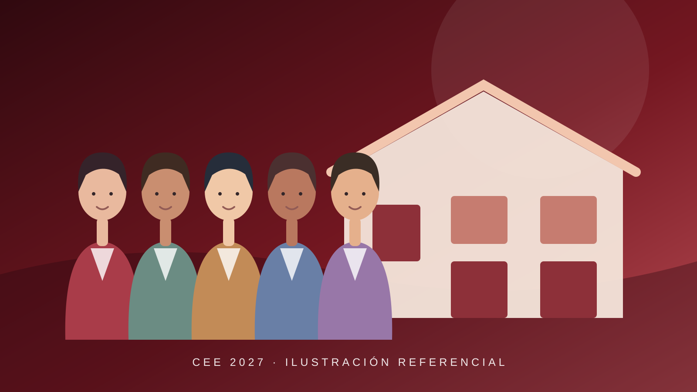
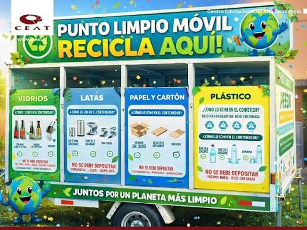
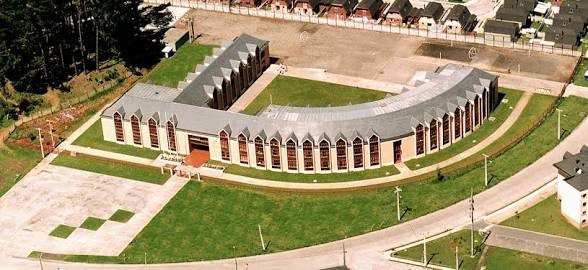
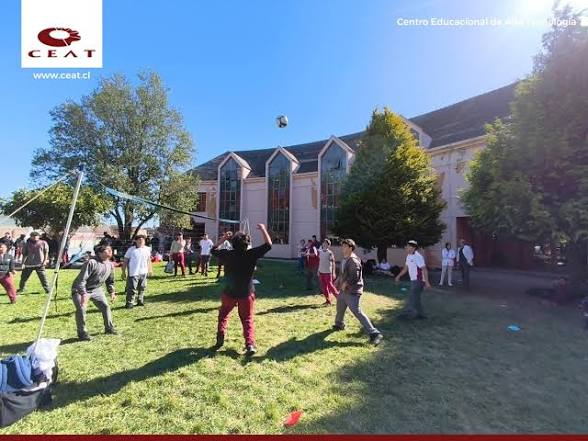
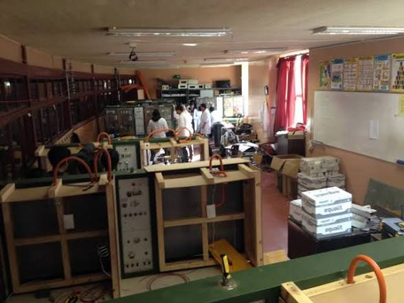
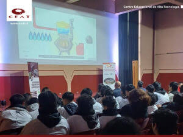
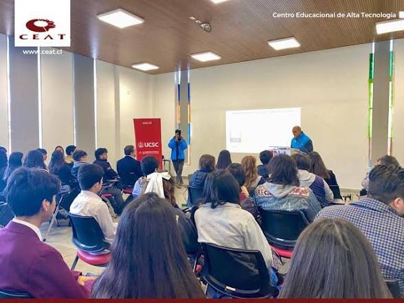

Escuchar al estudiantado
Recoger opiniones, inquietudes e ideas mediante espacios de participación y comunicación.
Comparte tu idea →
Candidatura · Centro de Estudiantes 2027
Una propuesta de representación activa, democrática y transparente para fortalecer nuestra comunidad educativa.
Explora la propuesta
Seguimiento abierto
Consulta las iniciativas, conoce las fechas confirmadas y revisa cómo se informarán los avances.
Nuestra convicción
Presentamos una candidatura que busca representar al estudiantado con responsabilidad, fortalecer la identidad técnico-profesional y promover mejoras concretas en la vida escolar.
Conoce quiénes somos →Plan de trabajo

Imagen referencial · localizada mediante Google Imágenes · se actualizará próximamente01Promover el reciclaje, recuperar áreas verdes y cuidar nuestro entorno.
↗
Imagen referencial · localizada mediante Google Imágenes · se actualizará próximamente02Impulsar el cuidado de los espacios y una convivencia sana e inclusiva.
↗
Imagen referencial · localizada mediante Google Imágenes · se actualizará próximamente03Generar oportunidades de recreación, actividad física y encuentro.
↗
Imagen referencial · localizada mediante Google Imágenes · se actualizará próximamente04Visibilizar nuestras especialidades y conectar experiencias.
↗
Imagen referencial · localizada mediante Google Imágenes · se actualizará próximamente05Más apoyo, oportunidades y espacios para la voz de cada estudiante, como complemento a los cuatro ejes oficiales.
↗Nuestra forma de trabajar
La representación estudiantil necesita diálogo, coordinación y responsabilidad en cada etapa.
Recoger opiniones, inquietudes e ideas mediante espacios de participación y comunicación.
Comparte tu idea →Revisar necesidades, evaluar posibilidades y coordinar las acciones con quienes corresponda.
Revisa el proyecto →Comunicar gestiones y resultados con claridad, sin presentar propuestas como logros realizados.
Ver seguimiento →Tu voz también construye
CEAT Te Escucha será un espacio para compartir propuestas, inquietudes e ideas para nuestra comunidad.

Información pública
Consulta la planificación, los acuerdos y las actividades que se vayan publicando con información confirmada.
Fechas y actividades confirmadas de la comunidad estudiantil.
Consultar agenda ↗02 / REGISTRORegistro público de reuniones y acuerdos que puedan compartirse.
Ver documentos ↗03 / RENDICIÓNActualizaciones sobre avances y resultados verificables.
Revisar informes ↗04 / IDENTIDADProyectos, especialidades y experiencias técnico-profesionales.
Explorar comunidad ↗05 / ARCHIVORegistro visual y cronológico de actividades realizadas.
Ver memoria ↗06 / CONFIANZACómo se reciben y utilizan las opiniones compartidas.
Leer información ↗Información y seguimiento
Conoce los avances, revisa el estado de los compromisos y mantente al día con las noticias de la candidatura.